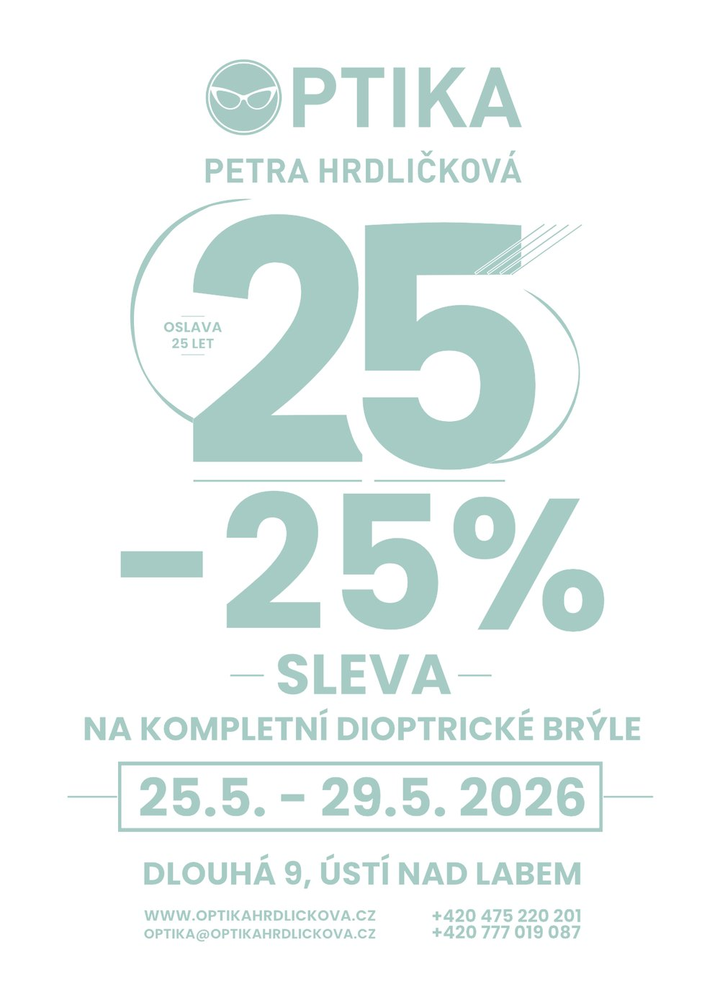
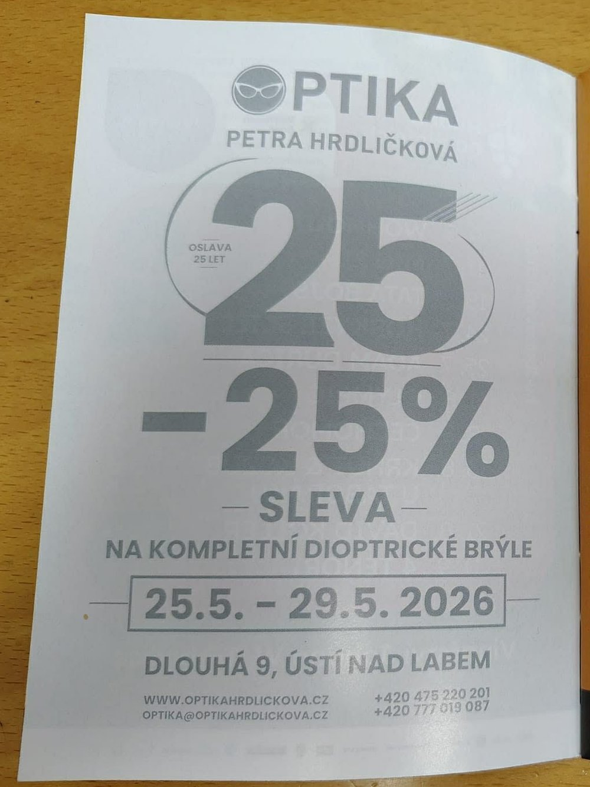
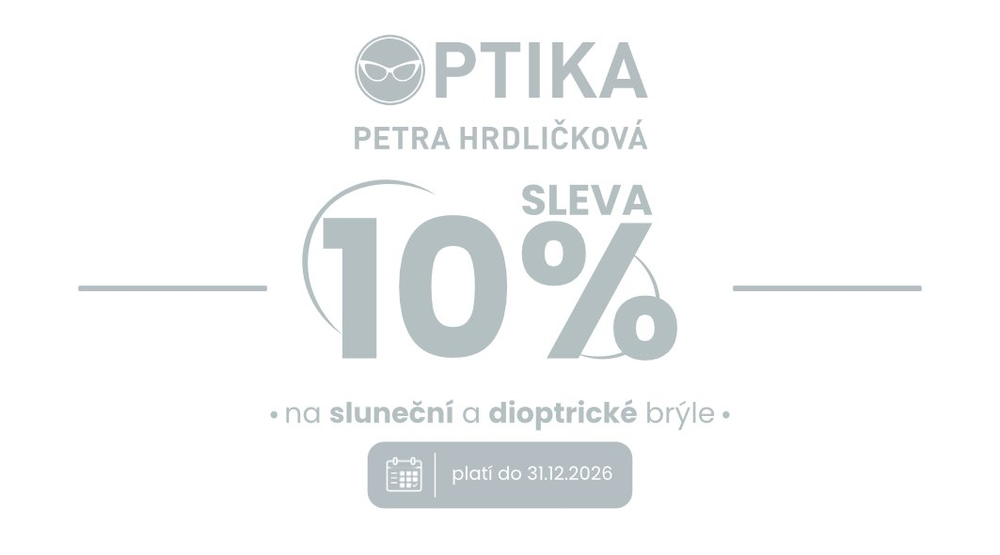
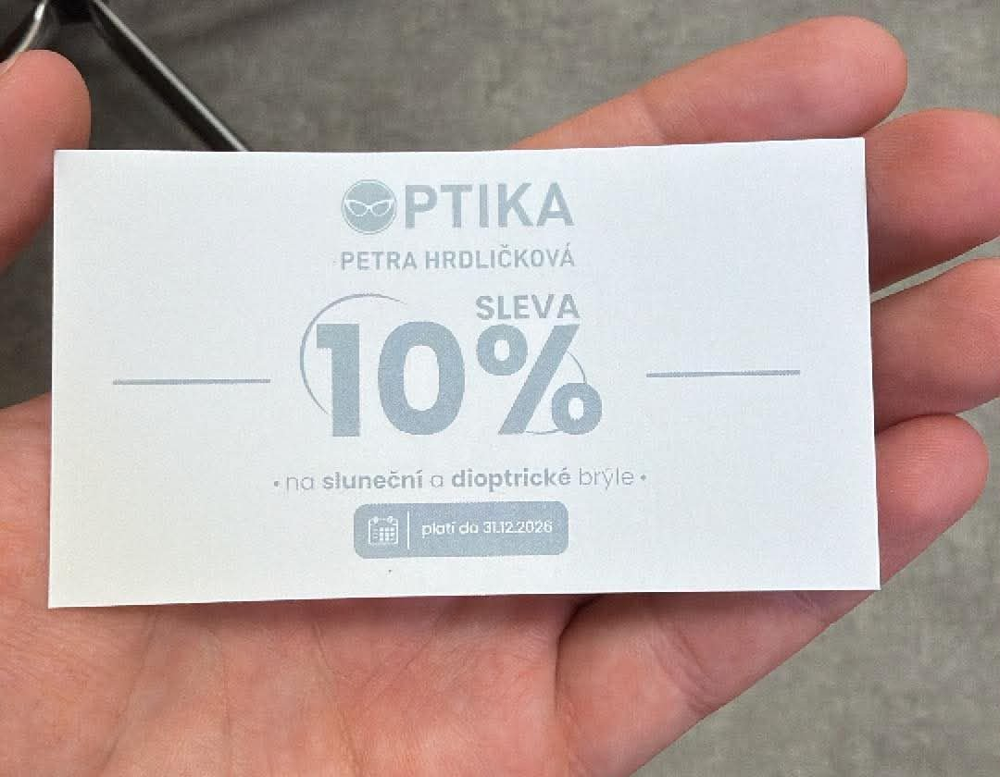
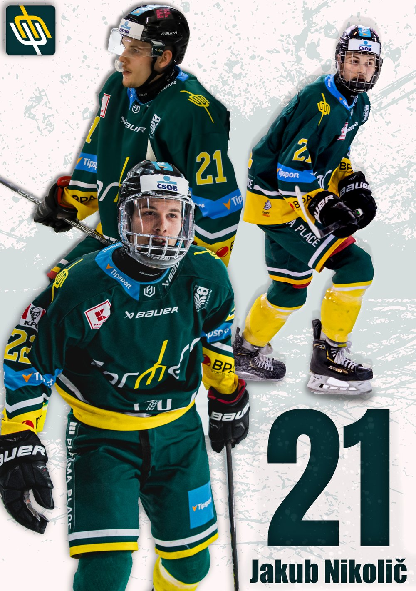

Spot · ČZU Farmers Prague
30sekundový spot na první zápas sezony
Pozvánka na Season Opener 2026. Spot se promítal na kostce přímo na zimním stadionu.
Střih · DaVinci Resolve
Přehrát na YouTube →
Digitální specialista ČZU Farmers Prague. Stříhám videa, navrhuji grafiku pro tisk i sítě, spravuji web a píšu články.
Pozvánka na Season Opener 2026. Spot se promítal na kostce přímo na zimním stadionu.
Kompletní střih videí pro YouTubera Afka. Každé video má 1 400–2 000 zhlédnutí.
Zadání: navrhnout leták, který oznámí slevu 25 % k 25 letům optiky, a vizitky s reklamou na trvalou slevu 10 %.
Výsledek: vizitky vyšly v tisku a leták vyšel jako celostránková inzerce v ústeckém časopise Uličník.





Grafiky pro hráče, kteří v týmu končí, připravené na klubový galavečer. Koláž z fotek ze zápasů, klubové barvy a dominantní číslo dresu.
Spravuji webové stránky týmu, jeho profil na Univerzitní lize ledního hokeje a v aplikaci UniLife a řeším marketingový e-mailing.
Studuji kariérové poradenství na ČZU a mám za sebou studium interaktivní grafiky na VOŠ. Video točím a stříhám od dětství. Ve volném čase jezdím na silničním kole, hraju hokej a fotím.
Nástroje: DaVinci Resolve, Sony Vegas, Affinity, Blender 3D, HTML.